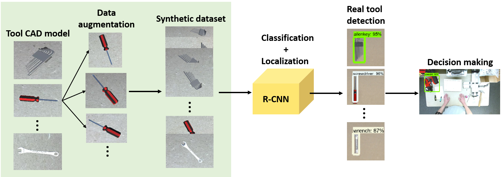

Jack Lai
NPI/Process Engineer
Education: M.S in Manufacturing Engineering
Research
Smart Augmented Reality Instructional System for Mechanical Assembly
Quality and efficiency are pivotal indicators of a manufacturing company. Many companies are suffering from shortage of experienced workers across the production line to perform complex assembly tasks such as assembly of an aircraft engine. This could lead to a significant financial loss. In order to further reduce time and error in an assembly, a smart system consisting of multi-modal Augmented Reality (AR) instructions with the support of a deep learning network for tool detection is introduced. The multi-modal smart AR is designed to provide on-site information including various visual renderings with a fine-tuned Region-based Convolutional Neural Network, which is trained on a synthetic tool dataset. The dataset is generated using CAD models of tools augmented onto a 2D scene without the need of manually preparing real tool images. By implementing the system to mechanical assembly of a CNC carving machine, the result has shown that the system is not only able to correctly classify and localize the physical tools but also enables workers to successfully complete the given assembly tasks. With the proposed approaches, an efficiently customizable smart AR instructional system, which is capable of sensing, characterizing the requirements, and enhancing worker’s performance effectively has been built and demonstrated.
- Low-cost, data fusion and light weight – Two RGB cameras
- Multi-modal onsite AR display – Enhance learning/training/performance
- Tooling feedback with deep learning – Minimize time and error
- Flexible and efficient to train deep learning model – Synthetic tool dataset
Augmented Reality
To visualize and understand onsite instructions, an AR instructional system which offers multi-threading display including texts, graphics, animations by applying data fusion needs to be created. With multi-modal AR instructions, workers are able to sense the physical environment while following the AR instructions step by step.

Machine Learning
During the manual assembly operation, how to efficiently secure every component in order to correctly assemble the entire product is crucial. To prevent from using wrong tools, a deep learning-based tool detector trained on a synthetic dataset is proposed, to help workers follow AR instructions. A webcam is mounted on top of the workbench to support workers in decision making. The camera captures video frames of the working area for the tool detector to classify and localize tools.
Projects
Quanta Manufacturing Nashville - FAI/TRI Projects
Coordinate First Article Inspection/Test Rack Inspection for new comupting servers
National Science Foundation: Cyber-Physical Sensing, Modeling, and Control with Augmented Reality for Smart Manufacturing Workforce Training and Operations Management
While U.S. manufacturers are investing tremendous efforts and resources to regain the power and growth of manufacturing, they are confronted by a set of critical and challenging issues on the workforce. Specifically, (1) lack of workforce with advanced training and skills; (2) need for rapid, smart, and individualized training to achieve workforce agility; and (3) on-the-job personal assistance to improve worker performance, safety and comfort. This project aims to address the above issues by exploring advanced CPS (cyber-physical system) methods and tools. Specifically, we will develop a cyber-physical sensing, modeling, and control infrastructure coupled with augmented reality to significantly improve the efficiency of workforce training, performance of operations management, safety and comfort of front-line workers for smart manufacturing. The proposed project contributes to the CPS program vision, especially Technology for Cyber-physical Systems. It implements a key scientific principle of CPS that incorporates sensing, analysis, intervention and outcome measurements in a tightly coupled and dynamic loop. Keywords: Technology for Cyber-Physical Systems, Smart Manufacturing, Human Sensing, Workforce Engineering, Augmented Reality.
Publications
- Lai, Ze-Hao, et al. "Smart augmented reality instructional system for mechanical assembly towards worker-centered intelligent manufacturing." Journal of Manufacturing Systems 55 (2020): 69-81.
- Tao, Wenjin, Ze-Hao Lai, Ming C. Leu, and Zhaozheng Yin. "Worker Activity Recognition in Smart Manufacturing Using IMU and sEMG Signals with Convolutional Neural Networks." Procedia Manufacturing 26 (2018): 1159-1166.
- Tao, Wenjin, Ze-Hao Lai, Ming C. Leu, and Zhaozheng Yin. "American Sign Language Alphabet Recognition Using Leap Motion Controller." (2018): 599.
- Tao, Wenjin, Ze-Hao Lai, and Ming C. Leu. "Manufacturing Assembly Simulations in Virtual and Augmented Reality." Augmented, Virtual, and Mixed Reality Applications in Advanced Manufacturing (2018).
- Nguyen, Tan Dat, Shao-I. Chu, Bing-Hong Liu, Liwen Hu, and Ze-Hao Lai. "Network under limited energy: New technique for using limited number of mobile devices for charging and collecting data." In Wireless Power Transfer Conference (WPTC), 2017 IEEE, pp. 1-4. IEEE, 2017.
Contact
+1 (573) 201-0490
jlai6331@gmail.com
Nashville, Tennessee, USA